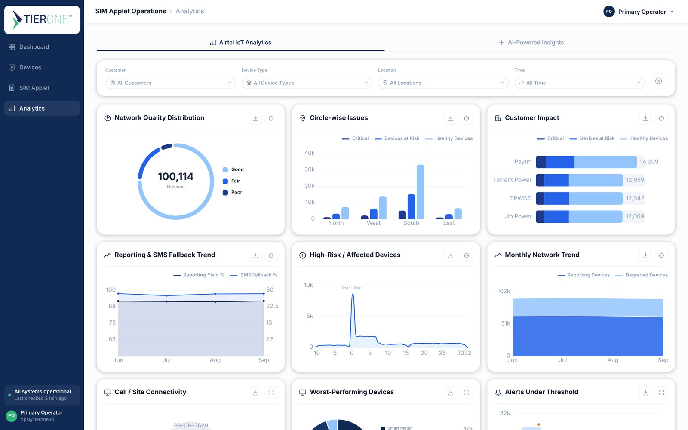
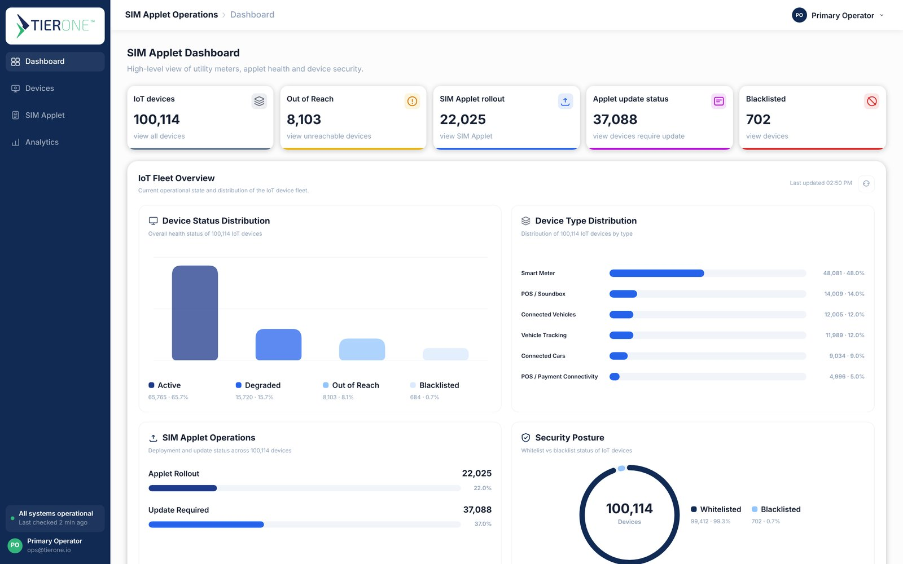
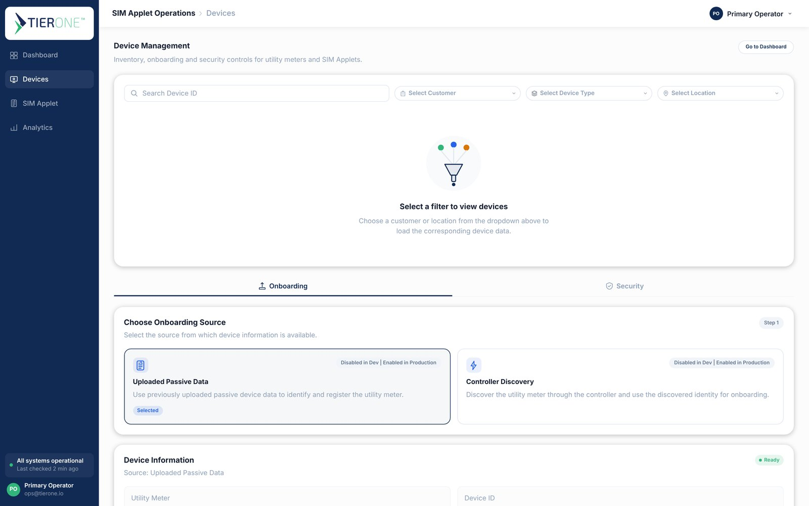
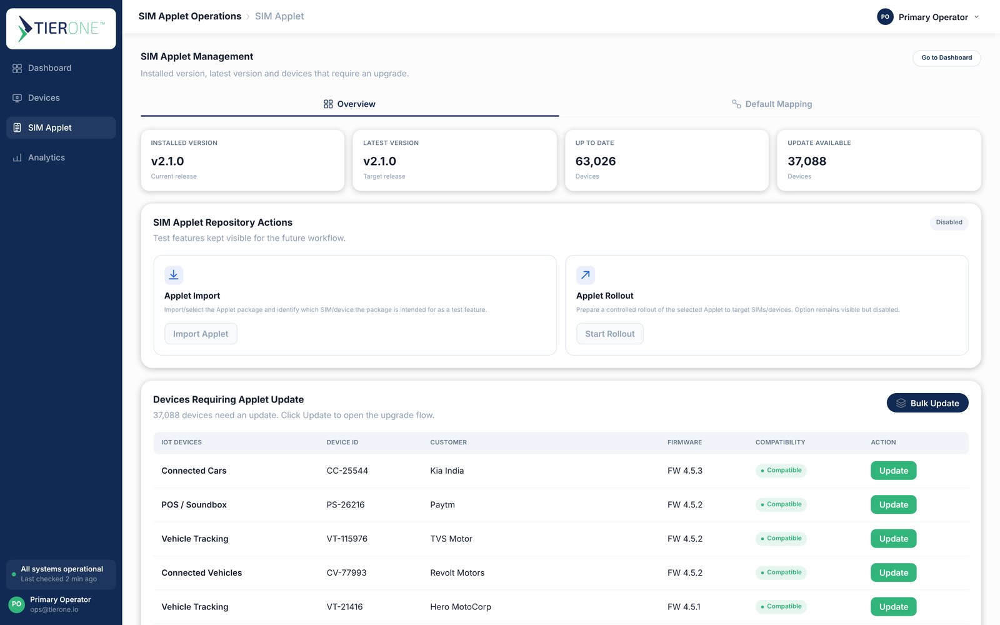

Finding 1
Information overload is the shared problem
Biggest monitoring challenges · multiple answers allowed
The only challenge everyone chose.
A dashboard I designed and built to help NOC engineers monitor 100,114 IoT devices, trace connectivity problems to affected customers and manage SIM Applet updates.

One place for NOC engineers to monitor smart meters, payment devices and connected cars.
Airtel’s IoT Network Operations Center (NOC), through TierOne. Engineers look after devices for 12 enterprise customers in 7 cities. When devices stop reporting, they need to know why and who is affected.
Everything lived in one master file: 100,114 rows, 22 columns. Engineers filtered and pivoted it by hand to answer simple questions.
One faulty cell site showed up as hundreds of rows, and two similar status columns were easy to mix up.
I studied the data, sketched the screens, designed the UI in Figma, and built and deployed the front end in React and TypeScript.

Monitor the network, find why devices fail and raise tickets.
A small program on the SIM card, updated remotely by the operator.
A circle is a region. A BTS is the cell-site radio equipment devices connect to.
Active, Degraded, Out of Reach (unreachable) or Blacklisted (blocked).

Who sends data: smart meters, soundboxes, vehicle trackers and connected cars.
The signal path: device → SIM Applet → BTS → service provider.
Why it mattered: customer, SIM Applet and BTS became the core filters.

Diagnose an outage: spike on the dashboard → filter by circle → find the BTS → raise a ticket.
Onboard a device: check IMEI, ICCID and model → register → SIM Applet assigned → live.
What it changed: the dashboard links straight into Analytics and BTS details.

Find first: filter the SIM Applet list and select devices.
Validate first: errors send you back to fix fields, not to the start.
Review, then confirm: no mass update is one misclick away.

Analytics: one filter bar drives a grid of downloadable chart cards.
Device details: SIM Applet beside network issues and KPIs.
Devices by circle: North, South, East, West, matching how NOC teams talk.
The data was there. A quick way to get answers from it wasn’t.
A 100,114-row spreadsheet holds everything but doesn’t tell you where to look. Every investigation started with filtering.
After building the dashboard, I ran a short Google Forms survey (November 2026) to check whether the problems I designed for are real. View the survey questions ↗
Retrospective and exploratory. It was collected after the design was finished, from 8 people, and is self-reported. It’s a sense check, not proof the design works.
Charts redrawn from the Google Forms summary. Counts are exact.
Google Forms summary screenshots will go here.
Topics paraphrased. Multi-select answers add up to more than 8.
| # | Topic | Answers (of 8) |
|---|---|---|
| 1 | Role | NOC engineer 6 · Technical support engineer 2 |
| 2 | Tools used for monitoring | Excel / Google Sheets 7 · Ticketing system 1 |
| 3 | How often devices are monitored | A few times a day 7 · Continuously throughout the day 1 |
| 4 | Information checked first multi-select | Customer information 6 · Signal strength 5 · Location 5 · Last communication time 4 · Network availability 3 · Device connectivity status 1 · Data usage 1 |
| 5 | How offline devices are identified | Excel reports 4 · Customer complaints 4 |
| 6 | Monitoring challenges multi-select | Too much data in one place 8 · Difficult to identify offline devices 4 · Difficulty tracking device history 2 · Delayed alerts 2 · Slow reporting 1 · Difficulty identifying recurring issues 1 · Multiple tools required 1 |
| 7 | Ease of identifying connectivity issues 1 = very difficult, 5 = very easy | 1: 7 · 2: 1 · 3–5: 0 |
| 8 | Information expected on a dashboard multi-select | Total connected devices 8 · Network performance 8 · Online/offline device status 2 · Device health overview 2 · Data usage statistics 0 |
| 9 | Preferred features multi-select | Bulk device management 8 · Downloadable reports 4 · Network performance analytics 3 · Real-time device status 2 |
| 10 | Importance of proactive issue identification 1 = not important, 5 = extremely important | 5: 8 |
Screenshots from the deployed prototype. It runs on a static dataset and hasn’t been usability-tested yet.
Problem: no overall picture; counting problem devices meant filtering by hand.
Decision: summary cards up top, each opening its device list. Red, amber and green only for status.
Why: engineers see if anything needs attention before opening a table.

Problem: 100,114 spreadsheet rows were slow to scroll and filter.
Decision: a searchable table that only draws visible rows; CSV export keeps the filters.
Why: the exported file matches what the engineer was looking at.
Problem: linking failing devices to a cell site and its customers was manual work.
Decision: four filters drive nine charts; a region opens its cell sites and affected customers.
Why: it follows the order of an investigation: region, site, then devices.

Problem: 37,088 devices need an update; one wrong bulk update could hit thousands.
Decision: bulk updates capped at 1,000 per session, after confirmation.
Why: less repeated work, with a limit on how far a mistake can spread.
Understanding circles and cell sites showed me engineers think by region, not by device.
At 100,000 rows, speed and export behaviour are part of the experience.
Picking a few counts over 22 fields took the most rework. Customer info may deserve more space.
Red, amber and green only for status keeps alerts clear. Still to test with users.
Counts before confirming and a 1,000-device cap balance speed and risk.
A short path in a demo isn’t a faster investigation. Real proof needs real tasks.